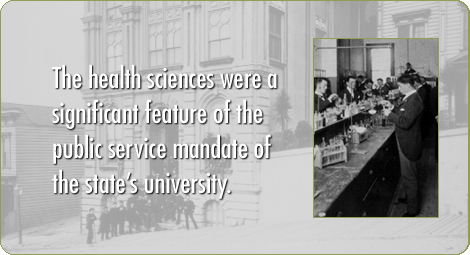
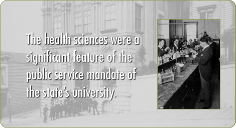

Introduction
The story of UCSF’s nineteenth-century beginnings provides a distinct contrast to more conventional accounts of the development of America’s health professions in the long-established medical centers of the East and Midwest. This is especially true in light of its early development in Gold Rush San Francisco, which in five decades developed from an isolated village into a heterogeneous American metropolis of more than 300,000 inhabitants. San Francisco’s founding decade of the 1850s was marked by the arrival of hordes of immigrant gold seekers of many nationalities, substandard housing, devastating city fires, cholera and typhoid epidemics, and governance by vigilance committees. Fixed in the social and economic chaos of the Gold Rush were the roots of California’s emerging health professions: Dentistry, Medicine, Nursing and Pharmacy.
Despite the geographical isolation and unique social conditions of this urban frontier, the western health professions did not develop in a vacuum. As this history reveals, professional leaders persistently corresponded with leaders in the eastern universities and traveled to visit professional schools, searching for ideal templates for their own developing institutions. And, although they borrowed freely from curricula, clinical teaching techniques, classroom and lab designs, San Francisco’s professional leaders often created a distinctive educational environment.
Rapid technological and theoretical developments within the professions themselves helped to transform medical education. In medicine this took the form of replacing traditional didactic lectures with hands-on instruction in pathology, physiology, bedside clinical training, and autopsy studies. In the last decades of the century, the development of bacteriology, immunology, antiseptic techniques, and anesthesia revolutionized medical practice and medical education. Dentistry, which by the mid-nineteenth century split from medicine as a specialty of its own, moved from crude tooth-pulling towards a primary concern with replacing and restoring teeth. In so doing, dentists pioneered nitrous oxide and ether anesthesia and introduced a number of new materials and devices, from gold foil and vulcanized rubber, to rotary instruments and adjustable chairs. In the field of pharmacy, the practice of manually preparing dosage forms (tinctures, extracts, pills, powder papers etc.) from a mere handful of effective drugs, and a pronounced interest in botanicals, gradually gave rise to patent medicines and industrially-produced drugs. This led eventually to increasingly sophisticated pharmaceutical chemistry and the development of the disciplines of pharmacognosy and pharmacology, revolutionizing the relationship between pharmacists and physicians. Finally, in the late nineteenth-century hospitals evolved from pest-houses and poorhouses into functional institutions for healing and acute care. Nursing emerged as a separate profession, created by women who took on responsibility for hospital cleanliness, nutrition, safeguarding the sterility of the operating room and medical and surgical supplies, and for the consistent provision of disciplined bedside care, initially in hospitals and later in homes.
In the case of medicine, the development of private medical colleges predated the founding of the University of California itself. The Organic Act of 1868 created the University of California and designated 160 acres of land in Berkeley for its use. Section 8 of the Act directed the Board of Regents “to affiliate with the university any incorporated college of medicine or law, or other special course of instruction now existing or may be created.” In 1872, as the structure of the divisions of the University was still under development and buildings were still under construction in Berkeley, a “medical department” was established under the control of physicians in San Francisco. Soon pharmacists moved to affiliate formally. In so doing, they put their instructional programs “on an academic basis” with the support of UC’s first president Daniel Coit Gilman, who promoted the addition of advanced scientific training to the young university. In 1881 the College of Dentistry was created by the Board of Regents as one of the “affiliated colleges” based in San Francisco. The three colleges -- medicine, pharmacy, and dentistry -- were not mere satellite appendages to Berkeley, however.
The affiliated colleges shaped and bolstered the developing University in many ways. At the turn of the century, the creation of fulltime scientific faculty positions in anatomy, pathology and physiology in connection with the affiliated colleges set a precedent for the University of California’s subsequent leadership in the basic biological sciences and their application to clinical problems. Owing to the consistent support of a long line of UC Presidents, the health sciences remained a significant feature of the public service mandate of the state’s university.
Leadership
Deans (Dentistry):
-
Samuel W. Dennis (1881-1882, 1883-1885)
-
Clark L. Goddard (1882-1883, 1885-1889)
-
Luis Lane Dunbar (1889-1899)
Deans (Medicine):
-
Hugh H. Toland (1864-1870)
-
R. Beverly Cole (1870-1875, 1878-1882)
-
Alonzo A. O'Neill (1875-1878)
Deans (Pharmacy):
-
Emlen Painter (1878-1883)
-
William Martin Searby (1883-1885, 1891-1909)
-
Edward W. Runyon (1885-1891)